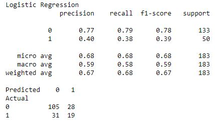
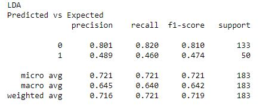

Prediction of autism spectrum disorder in adults
Data used adult data set diag ASD

Autism spectrum disorder (ASD) is a neurodevelopmental condition and is generally associated with
high healthcare costs, and the environment.
Today the diagnosis takes time and has a very high economic and social impact. This study considers early diagnosis of value helping to reduce these
repercussions significantly.
When noting an increase in cases of ASD in recent times worldwide, it is considered
relevant to develop effective diagnostic methods that help the health professional to
make early diagnoses by shortening difficult processes for the patient and their
family and reducing costs.
In the following study a data set with 20 attributes is used: ten characteristics of
behavior plus ten characteristics of the person that successive studies have shown are
effective in detecting cases of ASD in behavioral sciences.
The source of the data set is Fadi Fayez Thabtah, from the department of digital technology of
the Auckland Manukau Institute of Technology, New Zealand.
The attributes used in this data set are:
|
Attribute |
Type |
Range |
|---|---|---|
| A1_Score Response code to the first question asked in the applied test. | Dummy | 0 - 1 |
| A2_Score Response code to the second question asked in the applied test. | Dummy | 0 - 1 |
| A3_Score Response code to the third question asked in the applied test. | Dummy | 0 - 1 |
| A4_Score Response code to the fourth question asked in the applied test. | Dummy | 0 - 1 |
| A5_Score Response code to the fifth question asked in the applied test. | Dummy | 0 - 1 |
| A6_Score Response code to the sixth question asked in the applied test. | Dummy | 0 - 1 |
| A7_Score Response code to the seventh question asked in the applied test. | Dummy | 0 - 1 |
| A8_Score Response code to the eighth question asked in the applied test. | Dummy | 0 - 1 |
| A9_Score Response code to the ninth question asked in the applied test. | Dummy | 0 - 1 |
| A10_Score Response code to the tenth question asked in the applied test. | Dummy | 0 - 1 |
Age Age of the person. |
Continuous | 17-64 |
Sex: Sex of the person. |
Categorical | F - M |
Etnicidad: List of ethnic origins. |
Categorical | List of ethnic origins |
JaundiceIndicates if he was born with jaundice or not. |
Categorical | Yes-No |
Autism Indicate if have an autistic relative. |
Categorical | Yes-No |
Country_of_res Country of residence. |
Categorical | List of countries | used_app_before Used a screening app before or not. | Dummy | 0 - 1 |
age_desc Categorical age. |
Categorical | '18 and more' |
relation Who completes the questionnaire. |
Categorical | List of relatives |
Class / ASD is the dependent variable that determines a binary classification in whether the
patient is diagnosed as having ASD or not.
Therefore, we are faced with a classification problem, supervised since we have a output that is
evaluated as "correct".
Three different data sets were analyzed, one for data on children, one for data on
teenagers and another for adults.
But it was observed that the model works better when the age groups are separated for the
analysis.
In this case we will use the adult data set.
It is observed that there is a data with value 383 in age, it is decided to leave this case out as an outlier.
For this project we will use python and the pandas and scikit libraries for data modeling and
development of the prediction model.
The file to be used in a data frame is loaded using the pandas library
input_file3 = "autismAdult.csv" missing_values = ["?"] df3 = pd.read_csv(input_file3, na_values = missing_values) dataFrame=df3
Data understanding
First, we analyze the information of the data set. We observe that the model has deterministic attributes
such as the responses to the test, the result of the test and the classification of whether or not the person studied has autism spectrum
disorder.
Therefore, it does not make sense that we include these variables in the model given their
direct relationship with the cause studied, they are ephemeral variables.
So we select the attributes to use in the analysis, we check if there is missing data
and in case there is, removing them from the analysis by dropping them.
subDF=dataFrame[['age','gender','ethnicity','jundice','austim','contry_of_res','used_app_before', 'relation','Class/ASD']] print(subDF.columns[subDF.isnull().any()]) dataClean=subDF.dropna()
We therefore select the variables
age, gender, ethnicity, jundice, austim, country_of_res, used_app_before,
relation and Class / ASD, the latter as a dependent variable.
We know that the attributes jundice,
austim, used_app_before assume the values Yes and No, therefore we must transform them into some interpretable variable for the model, in this case
it was opted for categorical variables that assume the values 1 and 0.
Recoding is applied using pandas:
ordinals = ['jundice', 'austim', 'used_app_before']
new_df = pd.DataFrame(dataClean[ordinals])
dataClean[ordinals] =pd.DataFrame({col: new_df[col].astype('category').cat.codes for col in new_df}, index = dataClean.index)
dataClean2=pd.get_dummies(dataClean, columns=['gender','ethnicity','contry_of_res','relation'])
We can also observe here that the variables
gender, ethnicity, contry_of_res and relation are categorical. We recode them transforming
them into dummy variables in order to interpret the model in a proper way and be able to work
with models that include numeric attributes.
The recoded attributes are shown below:
The variables are selected below
dependent and the independent variable
X = np.array(dataClean2.drop(['Class/ASD'],1)) y = np.array(dataClean2['Class/ASD']) le = preprocessing.LabelEncoder() y_encoded=le.fit_transform(y)
The variable = Class / ASD has
Yes and No outputs so that it assumes values 0 and 1.
The size is established to divide the sample
into training and test data as well as the seed to be able to replicate the model with the same
sample and thus obtain the same results.
test_size = 0.30 seed = 7 train_X, test_X, train_y, test_y = train_test_split(X, y_encoded, test_size=test_size, random_state=seed)
Next, we will select the models to be tested, since it
is a classification problem whose output is a binary variable, we will use, among other models,
the Logistic Regression:
print("Logistic Regression")
log=LogisticRegression()
log.fit(train_X,train_y)
y_pred=log.predict(test_X)
print(classification_report(test_y ,y_pred))
confusion_matrix = pd.crosstab(test_y, y_pred, rownames=['Actual'], colnames=['Predicted'])
print(confusion_matrix)
sn.heatmap(confusion_matrix, annot=True)
An average performance of 67% can be observed. This performance does not seem to be good enough.

Now we will apply Linear Discriminant Analysis:
print("LDA")
lda=LinearDiscriminantAnalysis()
lda=lda.fit(train_X, train_y)
y_pred=lda.predict(test_X)
print("Predicted vs Expected")
print(classification_report(test_y, y_pred, digits=3))
An average performance of 71% can be observed, which
slightly increases the previous result.

This improves the previous prediction but it would be good to continue investigating different models that obtain better results.